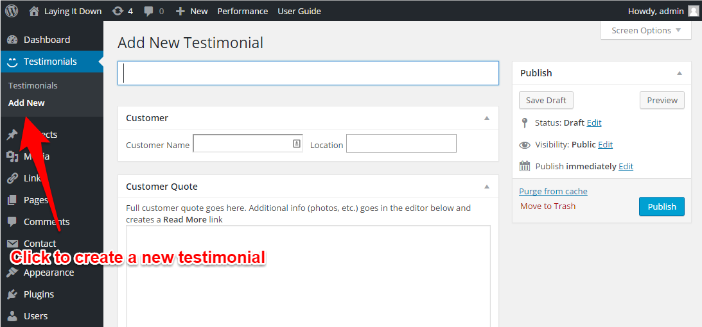

This brief guide is intended to help you manage the Laying It Down site. It covers the main actions you'll probably be doing:
The site now has daily database backups (post information but not media), and weekly full backups. So, in the event of a mishap or disaster, please contact me and I'll perform a restore as quickly as possible.
The site includes a plugin to boost performance called W3 Total Cache. Using this causes the contents of your pages and posts to be saved and reused between users' visits to the site. Since the pages are saved, the site doesn't have to compute as much, and so is much faster. The downside is that updates may not be visible until you "empty the cache", which will force WordPress to regenerate pages anew, picking up your edits in the process.
What this means in practice is that when you make a change to a page, project, testimonial, etc. you'll typically want to empty the cache by selecting Performance / Dashboard from the main Admin menu, and then clicking the "empty all caches" button.
The site uses a premium slider plugin called Soliloquy. There are lots of sliders for WordPress, but this one is very popular and relatively trouble free.
You can add media from your Media Library to sliders. It's easiest if you add the media before you start working with the sliders.
To make any changes to sliders, start by logging into WordPress and clicking on the
Soliloquy link in the side menu:
All the sliders are shown in a table view. Click on the Title of the one you want to modify,
or click the Add New button:
Each time a new slider is created, you should update its settings to be consistent with other sliders on the site. Most of the settings are okay. The settings that need to be changed are as follows:
| Tab | Property | Value |
|---|---|---|
| Config | Slider Dimensions | 960 x 600 |
| Config | Show Slider Control Nav? | unchecked |
| Mobile | Mobile Dimensions | 600 x 400 |
| Thumbnails | Enable Slider Thumbnails? | checked |
You can optionally link a photo to another page. This makes sense on the Home Page:
you should link each photo to its corresponding project page. To do this,
you need to have created the project first. Visit the project page to get
the URL. The full URL for a project will be something like
http://layingitdownnc.com/projects/elegant-kitchen-remodel-2/,
but it's simpler if you just copy the portion in bold and use that for the
value of the Hyperlink field. Remember to click Save Metadata when done.

Make sure to click the Update button in order to save your changes!
Projects are the normal WordPress "blog post" type, but relabeled as "Project" to align with how its used on the site. Anytime you've completed a job you want to show off, it would be good to add to the site.
The Portfolio link on the site contains all of the projects. Any time you add a Project, it goes to the top of the Portfolio page.
Before you add a Project, you should create a new Slider that holds the photos for the Project (see Adding and Modifying Sliders.
To create a new Project, click the Projects link in the main Dashboard side menu, then select the Add New Project option. You can also edit existing Projects, for example to change their title. You can control the ordering by editing the project and changing its Publish Date.
The Project post can include any description you want, but most likely you'll just want to include the Slider you created for the Project. Just click the Add Slider button and you'll see a dialog to select the Slider. Once the slider is selected, click the Publish or Update button.
A Testimonial is a custom post type used to display a quote or other content for a happy customer. Like Projects, Testimonials are ordered with the most recently added at the top, but you can change this by modifying the Publish Date.
To create a new Testimonial, click the Testimonials link in the main Dashboard side menu, and select the Add New option. Fill out the fields as described. The full Customer Quote will appear on the Testimonials page. You can add more information in the editor field below, which will be shown if the user clicks the item.
